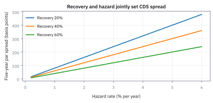
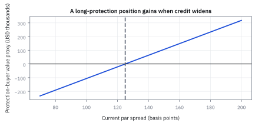

20.7 Credit Default Swaps (CDS)
CDS คือสัญญาที่ทำงานคล้ายประกันหนี้เสีย ผู้ซื้อจ่ายเบี้ยทุกไตรมาสตราบที่บริษัทลูกหนี้ยังไม่ผิดนัด และได้เงินชดเชยส่วนที่หายเมื่อผิดนัด อัตราเบี้ยที่ยุติธรรม (par spread) ออกมาใกล้ hazard × (1 − recovery)
ลูกค้าของธนาคารรายหนึ่งถือหุ้นกู้ของบริษัทแห่งหนึ่ง และกลัวว่าบริษัทจะไม่จ่ายหนี้ ซึ่งเรียกว่า “ผิดนัด” (default) ลูกค้าจึงทำสัญญา CDS (credit default swap) สัญญานี้ทำงานคล้ายประกัน ลูกค้าจ่ายค่าคุ้มครองเป็นงวด ๆ ที่เรียกว่า “เบี้ย” ถ้าบริษัทผิดนัด อีกฝ่ายจ่ายเงินชดเชยส่วนที่หายให้ ลูกค้าจึงอยู่ฝั่ง “ผู้ซื้อความคุ้มครอง”
สัญญาของลูกค้า (ตัวเลขสมมติ):
- ยอดหนี้ที่คุ้มครอง เรียกว่า notional $N=\$10{,}000{,}000$
- อายุ 5 ปี จ่ายเบี้ยทุกไตรมาส
- อัตราเบี้ย $s=125$ bp ต่อปี โดย 1 bp (basis point) คือ 0.01% ดังนั้น 125 bp คือ 1.25% ของ $N$ ต่อปี
ข้อมูลตลาดวันนี้ (ตัวเลขสมมติ):
- อัตราดอกเบี้ยไร้ความเสี่ยง $r=4.5\%$ ต่อปี ใช้คิดลดเงินในอนาคตให้เป็นมูลค่าวันนี้
- hazard rate ของบริษัท $\lambda=2\%$ ต่อปี คือโอกาสผิดนัดต่อปีของบริษัทที่ยังไม่เคยผิดนัด (อธิบายเต็มในหน้าพันธบัตรที่ผิดนัดได้)
- recovery $R=40\%$ คือสัดส่วนของหนี้ที่ยังได้คืนหลังผิดนัด ส่วนที่หายจริงจึงเป็น $1-R=60\%$
ถ้าเปิดสัญญาใหม่วันนี้ อัตราเบี้ยที่ยุติธรรมจะอยู่ราว 120 bp ต่อปี (หน้านี้จะคำนวณตัวเลขนี้ให้ดูทีละขั้น) เราเรียกอัตรานี้ว่า $s^*$ ลูกค้าจึงจ่ายแพงกว่าตลาดปีละ $125-120=5$ bp เพื่อนคนหนึ่งคิดว่าสัญญาเหลืออีก 5 ปี จึงคูณตรง ๆ เพื่อหามูลค่าสัญญาสำหรับลูกค้า $V$:
สัญญาของลูกค้าติดลบ \$25,000 จริงไหม?
ลองตอบก่อนเปิดเฉลย
ไม่จริง ค่าที่ถูกคือ −\$21,225.22 เพื่อนพลาดสองเรื่อง เรื่องแรก เบี้ยจ่ายเฉพาะงวดที่บริษัทยังไม่ผิดนัด เรื่องที่สอง เงินที่จ่ายในปีหลัง ๆ มีค่าวันนี้น้อยกว่า จึงต้องคิดลด ดังนั้นส่วนต่างต่อปีต้องคูณด้วย “จำนวนปีที่มีผลจริง” ซึ่งเรียกว่า risky annuity $A=4.2448$ ปี ไม่ใช่ 5 ปี อัตรายุติธรรมที่แม่นคือ $s^*=119.99975$ bp จึงได้
วิธีนี้เหมือนการตีมูลค่า swap เก่าด้วย annuity ในหน้า swap rate ต่างกันแค่ต้องเติมโอกาสรอดเข้าไป
ภาพรวมก่อนลงสูตร
คนที่ถือหุ้นกู้ของบริษัทเอกชนแบกความเสี่ยงสองอย่างพร้อมกัน อย่างแรกคือราคาหุ้นกู้ตกเมื่ออัตราดอกเบี้ยขึ้น อย่างที่สองคือบริษัทอาจผิดนัด ซึ่งเรียกว่าความเสี่ยงเครดิต ถ้ากลัวแค่อย่างที่สอง ก็ไม่ต้องขายหุ้นกู้ทิ้ง แค่ซื้อ CDS เพราะ CDS แยกความเสี่ยงเครดิตออกมาซื้อขายได้ตรง ๆ
CDS มีคู่สัญญาสองฝ่าย ผู้ซื้อความคุ้มครอง (protection buyer) จ่ายเบี้ยเป็นงวด ผู้ขายความคุ้มครอง (protection seller) รับเบี้ยไว้ และถ้าบริษัทที่สัญญาอ้างถึงผิดนัด ผู้ขายจ่ายส่วนที่หาย $(1-R)N$ ให้ผู้ซื้อ เงินที่ไหลไปทางเดียวกันเป็นสาย ๆ เรียกว่า “ขา” (leg) CDS จึงมีสองขาเหมือน swap คือขาเบี้ยกับขาชดเชย ตลาดตั้งอัตราเบี้ยให้สองขามีค่าเท่ากันในวันเริ่ม เพื่อไม่ให้ฝ่ายไหนได้เปรียบ อัตรานี้เรียกว่า par spread
การหาค่าของแต่ละขาใช้โอกาสรอดชุดเดียวกับหุ้นกู้เอกชน เบี้ยจ่ายเฉพาะเมื่อบริษัทยังไม่ผิดนัด จึงคูณด้วยโอกาสรอด เงินชดเชยจ่ายเฉพาะเมื่อผิดนัด จึงคูณด้วยโอกาสผิดนัดในงวดนั้น ผลที่ได้จะจำง่ายมาก: par spread ≈ hazard × (1 − recovery) เหตุผลคือ ในแต่ละไตรมาส เบี้ยที่ผู้ซื้อคาดว่าจะจ่ายต้องเท่ากับเงินชดเชยที่คาดว่าจะได้
หน้านี้เดินทีละขั้น เริ่มจากเงินของอนาคตแบบเดียวด้วยมือ แล้วสร้างสองขาทีละงวด หา par spread และสูตรประมาณ จากนั้นตอบโจทย์เปิดหน้า วัดความไวของสัญญา แกะ hazard จาก spread หลายอายุ และปิดด้วย CDS 2 ปีใน workbook ของคอร์ส รูปแรกด้านล่างคือเงินของ CDS หนึ่งสัญญาในอนาคตแบบที่บริษัทผิดนัดในเดือนที่ 16
รูป — เบี้ยหยุดเมื่อผิดนัด เงินชดเชยมาแทน
ศัพท์ที่ใช้ในหัวข้อนี้
- Credit default swap (CDS)
- สัญญาที่ผู้ซื้อจ่ายเบี้ยเป็นงวด เพื่อรับเงินชดเชยถ้าบริษัทที่สัญญาอ้างถึง (reference entity) เกิด credit event เช่น ไม่จ่ายหนี้หรือล้มละลาย ใช้ป้องกันหรือรับความเสี่ยงเครดิต โดยไม่ต้องซื้อขายตัวหุ้นกู้
- Notional และ bp
- notional คือยอดหนี้ที่สัญญาคุ้มครอง ใช้เป็นฐานคิดทั้งเบี้ยและเงินชดเชย bp (basis point) คือ 0.01% เบี้ย 125 bp ต่อปีบน notional \$10 ล้าน จึงเป็น $0.0125\times10^7=\$125{,}000$ ต่อปี
- Hazard rate และ recovery
- hazard rate คือโอกาสผิดนัดต่อปีของบริษัทที่ยังไม่เคยผิดนัด recovery คือสัดส่วนของหนี้ที่เจ้าหนี้ยังได้คืนหลังผิดนัด ส่วนที่หาย $1-R$ เรียกว่า loss given default ทั้งสองอธิบายเต็มในหน้าพันธบัตรที่ผิดนัดได้
- Discount factor
- มูลค่าวันนี้ของเงิน \$1 ที่จะได้ในอนาคต เช่น ที่อัตรา 4.5% ต่อปี เงิน \$1 ในอีก 1 ปีมีค่าวันนี้ $e^{-0.045}=\$0.956$
- Premium leg และ protection leg
- premium leg (ขาเบี้ย) คือมูลค่าวันนี้ของเบี้ยทั้งหมดที่ผู้ซื้อคาดว่าจะจ่าย ตราบที่บริษัทยังไม่ผิดนัด รวมเบี้ยค้างของงวดที่ผิดนัด protection leg (ขาชดเชย หรือ default leg) คือมูลค่าวันนี้ของเงินชดเชย $(1-R)N$ ที่ผู้ขายคาดว่าจะจ่ายเมื่อผิดนัด
- Accrued premium (เบี้ยค้าง)
- เบี้ยของช่วงตั้งแต่วันจ่ายล่าสุดถึงวันผิดนัด ผู้ซื้อได้รับความคุ้มครองช่วงนั้นไปแล้ว แต่ยังไม่ได้จ่าย จึงต้องจ่ายตอนสัญญาจบ
- Par spread
- อัตราเบี้ยต่อปีที่ทำให้สองขามีค่าเท่ากัน สัญญาใหม่ที่อัตรานี้จึงไม่ต้องจ่ายเงินก้อนตอนเริ่ม ตลาดใช้ตัวเลขนี้พูดถึงความเสี่ยงเครดิตของบริษัทหรือประเทศ spread ยิ่งสูง ตลาดยิ่งมองว่าผิดนัดง่าย
- Risky annuity
- มูลค่าวันนี้ของการจ่ายปีละ 1 ทุกงวด ตราบที่บริษัทยังไม่ผิดนัด (รวมเบี้ยค้าง) หน่วยเป็นปี ใช้แปลงส่วนต่างของอัตราเบี้ยเป็นเงิน เหมือน annuity ของ swap ที่เติมโอกาสรอดเข้าไป
- Upfront และ standard coupon
- ตั้งแต่ปี 2009 ตลาดใช้อัตราเบี้ยมาตรฐาน (standard coupon) ไม่กี่ค่า เช่น 100 bp หรือ 500 bp แล้วชดเชยส่วนต่างกับ par spread ด้วยเงินก้อนที่จ่ายวันเริ่มสัญญา เรียกว่า upfront
- Credit01 และ jump-to-default
- credit01 คือเงินที่สัญญาได้หรือเสียเมื่อ hazard ขยับขึ้น 1 bp jump-to-default คือเงินที่เปลี่ยนทันทีถ้าบริษัทผิดนัดวันนี้ ตัวหลังใหญ่กว่าตัวแรกหลายพันเท่า จึงต้องรายงานแยกกัน
สัญลักษณ์และหน่วย
| สัญลักษณ์ | ความหมาย | หน่วย |
|---|---|---|
| $N,\ R$ | notional และ recovery (สัดส่วนของ notional) | \$, ไม่มีหน่วย |
| $r$ | อัตราดอกเบี้ยไร้ความเสี่ยง ใช้คิดลด | ต่อปี |
| $\delta,\ T_i=i\delta,\ n$ | ความยาวงวด วันจ่ายงวดที่ $i$ และจำนวนงวด | ปี, ปี, จำนวนเต็ม |
| $\tau,\ t_{k-1}$ | วันผิดนัด และวันจ่ายเบี้ยงวดล่าสุดก่อนผิดนัด | ปี |
| $D_i,\ Q_i$ | discount factor และโอกาสรอดถึง $T_i$ | ไม่มีหน่วย |
| $\Delta Q_i$ | โอกาสผิดนัดในงวดที่ $i$ $=Q_{i-1}-Q_i$ | ไม่มีหน่วย |
| $\lambda,\ h$ | hazard ต่อปี และโอกาสผิดนัดต่องวด | ต่อปี, ต่องวด |
| $s,\ s^*$ | อัตราเบี้ยของสัญญา และ par spread | ต่อปี |
| $A$ | risky annuity | ปี |
| $G,\ \Sigma_D$ | ผลบวก $\sum_iD_iQ_i$ และ $\sum_iD_i\,\Delta Q_i$ ใช้ในขั้นที่ 5 | ไม่มีหน่วย |
| $X_{\rm buy}$ | เงินสุทธิที่ผู้ซื้อได้ในอนาคตแบบเดียว ยังไม่คิดลด | \$ |
| $V_{\rm buy}$ | มูลค่าสัญญาสำหรับผู้ซื้อความคุ้มครอง | \$ |
ขั้นที่ 1 — ใครจ่ายใคร และเงินของอนาคตแบบเดียว
ก่อนจะเฉลี่ยอะไร ต้องเห็นก่อนว่าเงินไหลจริงอย่างไรในอนาคตแบบหนึ่ง ขั้นนี้ใช้ CDS ตัวเล็กของรูปแรก (ตัวเลขจากตัวอย่างในคอร์ส):
- notional $N=\$1{,}000{,}000$ อายุ 2 ปี
- เบี้ย $s=160$ bp $=0.016$ ต่อปี จ่ายทุกไตรมาส ความยาวงวดจึงเป็น $\delta=0.25$ ปี
- recovery $R=45\%$
- สมมติว่าบริษัทผิดนัดในเดือนที่ 16
กติกาแบบง่ายของหน้านี้มีสองข้อ ข้อแรก สัญญาจบที่วันจ่ายเบี้ยถัดไปหลังผิดนัด คือเดือนที่ 18 ข้อสอง ผู้ซื้อจ่ายเบี้ยค้าง คือเบี้ยของช่วงที่ได้รับความคุ้มครองไปแล้วแต่ยังไม่ได้จ่าย ช่วงนี้เริ่มที่วันจ่ายล่าสุด $t_{k-1}$ (เดือน 15) และจบที่วันผิดนัด $\tau$ (เดือน 16) ยาว 1 เดือน หรือ $\tfrac1{12}$ ปี ทีนี้คิดเงินแต่ละก้อน แล้วรวมเป็นเงินสุทธิของผู้ซื้อ $X_{\rm buy}$:
ผู้ซื้อจ่ายเบี้ยเต็มงวดห้างวด ในเดือน 3, 6, 9, 12 และ 15 พอบริษัทผิดนัดในเดือน 16 ผู้ซื้อก็ค้างเบี้ยอยู่หนึ่งเดือน ในเดือน 18 ผู้ซื้อจ่ายเบี้ยค้างนี้ และรับเงินชดเชย \$550,000 ในวันเดียวกัน
จุดที่คนสะดุดบ่อยคือช่วงค้าง ช่วงที่ถูกคือ $\tau-t_{k-1}$ (เดือน 15 ถึง 16) ไม่ใช่ $t_k-\tau$ (เดือน 16 ถึง 18) เหตุผลคือผู้ซื้อจ่ายเฉพาะช่วงที่ได้รับความคุ้มครองจริง หลังวันผิดนัดไม่มีอะไรให้คุ้มครองแล้ว บางเอกสารพิมพ์สองตัวนี้สลับกัน ตัวอย่างนี้ช่วยตรวจได้ เพราะคำตอบต้องเป็นหนึ่งเดือน ไม่ใช่สองเดือน
นี่เป็นเงินของอนาคตแบบเดียว ยังไม่คิดลดและยังไม่คูณโอกาส ผลจึงสุดขั้ว ผู้ซื้อจ่าย $5\times4{,}000+1{,}333.33=\$21{,}333.33$ แต่ได้ \$550,000 ถ้าบริษัทไม่ผิดนัดเลย ผู้ซื้อจ่ายครบแปดงวด $8\times4{,}000=\$32{,}000$ และไม่ได้อะไรกลับมา ราคาที่ยุติธรรมต้องเฉลี่ยอนาคตทุกแบบ ซึ่งคือเรื่องของขั้นถัดไป
รูป — เงินไหลระหว่างสามฝ่าย
ขั้นที่ 2 — โอกาสรอดและโอกาสผิดนัดรายไตรมาส
ตั้งแต่ขั้นนี้กลับไปใช้ CDS 5 ปีของโจทย์เปิดหน้า:
- notional $N=\$10$ ล้าน และ recovery $R=40\%$
- จ่ายทุกไตรมาส ความยาวงวด $\delta=0.25$ ปี รวม $n=20$ งวด วันจ่ายงวดที่ $i$ คือ $T_i=0.25\,i$ ปี
- อัตราดอกเบี้ย $r=4.5\%$ และ hazard rate $\lambda=2\%$ ต่อปี ทั้งคู่คงที่
ทำไมต้องรู้โอกาส เพราะเงินแต่ละก้อนจ่ายเฉพาะในบางอนาคต เบี้ยงวดที่ $i$ จ่ายเฉพาะเมื่อบริษัทรอดถึงวันจ่าย $T_i$ จึงต้องรู้โอกาสรอด $Q_i$ เงินชดเชยของงวดที่ $i$ จ่ายเฉพาะเมื่อบริษัทผิดนัดภายในงวดนั้นพอดี จึงต้องรู้โอกาสผิดนัดในงวด $\Delta Q_i$ ตัวหลังคือโอกาสรอดถึงต้นงวดลบโอกาสรอดถึงปลายงวด เมื่อ hazard คงที่ โอกาสรอดลดลงแบบ exponential ตามที่หน้าพันธบัตรที่ผิดนัดได้พิสูจน์ไว้ ส่วน discount factor $D_i$ คือมูลค่าวันนี้ของ \$1 ที่ได้ในวัน $T_i$:
สองโอกาสนี้ใช้คนละที่ $Q_i$ ใช้คูณเงินที่จ่ายเมื่อบริษัทยังรอด คือเบี้ย $\Delta Q_i$ ใช้คูณเงินที่จ่ายเมื่อผิดนัด คือเงินชดเชยและเบี้ยค้าง ไตรมาสแรกมีโอกาสผิดนัดแค่ 0.004988 ไม่ใช่ 0.995012 การหยิบสลับกันเป็นบั๊กที่พบบ่อยที่สุดในโค้ด CDS เพราะตัวแปรสองตัวหน้าตาคล้ายกัน
มีข้อสมมติหนึ่งข้อที่ต้องพูดออกมา คือการผิดนัดไม่เกี่ยวกับอัตราดอกเบี้ย ข้อนี้ทำให้มูลค่าวันนี้ของเงิน $X$ ที่จ่ายใน $T_i$ ด้วยโอกาส $p$ แยกเป็นผลคูณง่าย ๆ ได้ คือ $D_i\times p\times X$
ขั้นที่ 3 — ขาเบี้ย: เบี้ยเต็มงวดบวกเบี้ยค้าง ยุบเป็นค่าเฉลี่ยแบบสี่เหลี่ยมคางหมู
มีโอกาสครบแล้ว ขั้นนี้หามูลค่าวันนี้ของเบี้ยทั้งหมด เรียกว่า $PV_{\rm prem}$ เบี้ยในแต่ละงวดมีสองก้อน ก้อนแรกคือเบี้ยเต็มงวด $\delta sN$ ซึ่งจ่ายในวัน $T_i$ ถ้าบริษัทรอดถึงวันนั้น จึงคูณด้วย $D_iQ_i$ ก้อนที่สองคือเบี้ยค้าง ซึ่งจ่ายถ้าบริษัทผิดนัดกลางงวด เราไม่รู้ว่าจะผิดนัดวันไหนในงวด จึงสมมติว่าทุกวันมีโอกาสเท่ากัน เบี้ยค้างเฉลี่ยจึงเป็นครึ่งงวด $\tfrac{\delta}{2}sN$ และคูณด้วย $D_i\,\Delta Q_i$ (กติกาของหน้านี้จ่ายเงินที่ปลายงวด) รวมทุกงวดแล้วดึง $sN$ ออกมาข้างหน้า:
จังหวะที่ต้องดูคือการยุบสองก้อนเป็นก้อนเดียว ดึง $\tfrac{\delta}{2}$ ออกจากทั้งสองก้อน ก้อนแรกเหลือ $2Q_i$ ก้อนที่สองเหลือ $Q_{i-1}-Q_i$ รวมกันได้ $2Q_i+Q_{i-1}-Q_i=Q_{i-1}+Q_i$ ความหมายคือ เบี้ยของแต่ละงวดถูกคูณด้วยค่าเฉลี่ยของโอกาสรอดต้นงวดกับปลายงวด เหมือนการหาพื้นที่ด้วยสี่เหลี่ยมคางหมู
ผลบวกที่เหลือตั้งชื่อว่า $A$ คือ risky annuity มันไม่มี $s$ อยู่ข้างใน และมีหน่วยเป็นปี อ่านได้ว่า “สัญญานี้เก็บเบี้ยได้เทียบเท่ากี่ปีเต็ม เมื่อคิดเป็นเงินวันนี้” ถ้าไม่มีทางผิดนัด $Q_i=1$ ทุกงวด $A$ จะกลายเป็น annuity ธรรมดาของ swap
ขั้นที่ 4 — ขาชดเชย และ par spread
อีกขาหนึ่งคือเงินชดเชย $(1-R)N$ ตามกติกาของหน้านี้ เงินนี้จ่ายที่ปลายงวดที่ผิดนัด ถ้าผิดนัดในงวดที่ $i$ ก็คูณด้วยโอกาส $\Delta Q_i$ และคิดลดด้วย $D_i$ บวกทุกงวดได้เลย เพราะบริษัทผิดนัดได้ครั้งเดียว ผลบวกคือมูลค่าวันนี้ของขาชดเชย $PV_{\rm prot}$
สัญญาใหม่ต้องไม่มีใครได้เปรียบตั้งแต่วันแรก จึงตั้งให้สองขาเท่ากัน $PV_{\rm prot}=s^*NA$ แล้วหารด้วย $NA$ ทั้งสองข้าง ได้ par spread $s^*$ แบบเดียวกับการหา swap rate:
สูตรนี้ถูกแต่ยังไม่บอกว่า $s^*$ ขึ้นกับอะไร ลองสมมติต่อว่าโอกาสผิดนัดของผู้ที่รอดถึงต้นงวดคงที่ทุกงวด เรียกว่า $h$ (ต่องวด ไม่ใช่ต่อปี) ดังนั้นในแต่ละงวด ผู้รอดหายไปสัดส่วน $h$:
จังหวะสำคัญคือผลบวก $\sum_iD_iQ_{i-1}$ โผล่ทั้งในเศษและในส่วน จึงตัดกันหมด อัตราดอกเบี้ยซ่อนอยู่ใน $D_i$ ทั้งหมด พอผลบวกนี้หายไป อัตราดอกเบี้ยก็หายไปด้วย par spread จึงไม่ขึ้นกับอัตราดอกเบี้ยเลย ตราบที่ $h$ คงที่
ระวังตัว $\delta$ ในตัวส่วน เพราะ $h$ เป็นโอกาสต่องวด การหารด้วย $\delta$ แปลงให้เป็นอัตราต่อปีเหมือน $s^*$ บางเอกสารเขียน $(1-R)h/(1-h/2)$ โดยไม่มี $\delta$ ซึ่งใช้ได้เฉพาะเมื่องวดยาวหนึ่งปี ตัวหาร $1-h/2$ มาจากเบี้ยค้าง งวดที่ผิดนัดจ่ายเบี้ยแค่ครึ่งงวดโดยเฉลี่ย บรรทัดสุดท้ายมาจาก $h\approx\lambda\delta$ และ $1-h/2\approx1$ เมื่องวดสั้น
ลองใส่ตัวเลขของเรา $h=1-e^{-0.005}=0.0049875$:
สองค่าเกือบเท่ากันพอดี รูปด้านล่างแสดงเหตุผลที่สูตรไม่ขึ้นกับอัตราดอกเบี้ยอีกทาง: ที่ par spread เงินสองขาเท่ากันทุกไตรมาส ไม่ใช่แค่ผลรวม
รูป — เงินที่คาดว่าจะได้กับเงินที่คาดว่าจะจ่ายในแต่ละไตรมาส
ขั้นที่ 5 — ตัวเลขของ CDS 5 ปี: annuity, ขาชดเชย และ par spread
โจทย์ให้อะไรมาบ้าง: CDS 5 ปีของโจทย์เปิดหน้า $N=\$10$ ล้าน $R=40\%$ $r=4.5\%$ $\lambda=2\%$ จ่ายรายไตรมาส 20 งวด ขั้นนี้หาตัวเลขจริงของ $A$, $PV_{\rm prot}$ และ $s^*$ ไม่ต้องบวก 20 งวดทีละตัว เพราะเมื่อ $r$ และ $\lambda$ คงที่ ทุกงวดมีรูปแบบเดียวกัน:
- $D_iQ_i=e^{-rT_i}e^{-\lambda T_i}=e^{-(0.045+0.02)\times0.25\,i}=a^i$ โดย $a=e^{-0.01625}=0.983881$
- $D_i\,\Delta Q_i=D_i(Q_{i-1}-Q_i)=D_iQ_i\,(e^{0.005}-1)=(e^{0.005}-1)\,a^i$ เพราะ $Q_{i-1}=Q_i\,e^{0.005}$
ผลบวก 20 งวดจึงเป็นอนุกรมเรขาคณิต ซึ่งมีสูตรปิด จากนั้นแทนลงสูตร $A$ ของขั้นที่ 3 ในรูป $A=\delta\sum_iD_iQ_i+\tfrac{\delta}{2}\sum_iD_i\,\Delta Q_i$ และสูตร $s^*$ ของขั้นที่ 4:
คำตอบ: ขาชดเชยมีค่า \$509,378.76 ที่อัตราเบี้ย 119.99975 bp ขาเบี้ยมีค่าเท่ากันพอดี คือ $10^7\times0.0119999750\times4.2448318563=\$509{,}378.76$ สัญญาใหม่ที่อัตรานี้จึงไม่ต้องจ่ายเงินก้อนตอนเริ่ม ทั้งที่แต่ละขามีค่าเกินครึ่งล้านดอลลาร์ annuity 4.2448 ปีแยกเป็นสองส่วน ส่วนเบี้ยเต็มงวด $0.25\times16.936879=4.2342$ ปี และส่วนเบี้ยค้าง $0.125\times0.0848965=0.0106$ ปี ส่วนเบี้ยค้างเล็กมาก เพราะโอกาสผิดนัดต่อไตรมาสมีแค่ราว 0.5%
ตรวจเองใน 10 วินาที: ปัดเลขแล้วคิดในหัว $0.6\times0.0849/4.245=0.0120$ เท่ากับสูตรลัด $\lambda(1-R)=0.02\times0.6=0.0120$ และ annuity ต้องต่ำกว่า 5 ปี เพราะเบี้ยถูกคิดลดและหยุดเมื่อผิดนัด
รูป — par spread เกือบเป็น hazard × loss ตาม recovery

ขั้นที่ 6 — สัญญาที่เบี้ย 125 bp มีค่าเท่าไร และ upfront
ตอนนี้มีของครบที่จะตอบโจทย์เปิดหน้าแล้ว สัญญาของลูกค้าจ่ายเบี้ย $s=125$ bp แต่ par spread วันนี้คือ $s^*=119.99975$ bp มูลค่าของสัญญาสำหรับผู้ซื้อ $V_{\rm buy}$ คือสิ่งที่ผู้ซื้อคาดว่าจะได้ ลบสิ่งที่คาดว่าจะจ่าย ได้คือขาชดเชย \$509,378.76 จากขั้นที่ 5 จ่ายคือขาเบี้ยที่อัตราของสัญญา $sNA$:
คำตอบเดียวกันได้จากสูตรสั้นกว่า แทน $PV_{\rm prot}=s^*NA$ ซึ่งเป็นนิยามของ par spread:
สูตรสั้นบอกตรง ๆ ว่ามูลค่าคือ “ส่วนต่างของอัตราเบี้ย คูณ notional คูณ risky annuity” ผู้ซื้อจ่ายแพงกว่าอัตรายุติธรรมราว 5 bp ต่อปี สัญญาจึงติดลบ \$21,225.22 เพื่อนในโจทย์เปิดหน้าใช้สูตรเดียวกันนี้ แต่ใส่ 5 ปีแทน $A=4.2448$ ปี จึงได้ \$25,000 ซึ่งเกินไป เพราะ 5 ปีลืมไปว่าเบี้ยหยุดเมื่อผิดนัด และเงินปีหลัง ๆ มีค่าวันนี้น้อยกว่า
ถ้าวันนี้จะเปิดสัญญาใหม่ที่เบี้ย 125 bp ผู้ซื้อจะเสียเปรียบ \$21,225.22 ผู้ขายจึงต้องจ่ายเงินก้อนนี้ให้ผู้ซื้อตอนเริ่มสัญญา เงินก้อนนี้เรียกว่า upfront
ตลาดจริงใช้ upfront ทุกวัน ISDA (สมาคมที่เขียนสัญญามาตรฐานของตลาด derivative) ปรับกติกาในปี 2009 ตั้งแต่นั้น CDS ในสหรัฐฯ ซื้อขายที่เบี้ยมาตรฐานแค่ 100 bp หรือ 500 bp และครบกำหนดในวันมาตรฐาน คือวันที่ 20 ของเดือนมีนาคม มิถุนายน กันยายน และธันวาคม ส่วนต่างกับ par spread จ่ายเป็น upfront ด้วยสูตร $N(s^*-s)A$ เดียวกัน เช่น บริษัทของเราที่ $s^*=119.99975$ bp ถ้าซื้อที่เบี้ยมาตรฐาน $s=100$ bp ผู้ซื้อจ่ายเบี้ยถูกไป จึงต้องจ่าย upfront ให้ผู้ขาย $10^7\times0.0019999750\times4.2448318563=\$84{,}895.58$
รูป — ผู้ซื้อความคุ้มครองได้เมื่อ spread กว้างขึ้น

ขั้นที่ 7 — credit01 และความเสี่ยงตอนผิดนัด
ฝ่ายบริหารความเสี่ยงของธนาคารอยากรู้สองเรื่องเกี่ยวกับสัญญานี้ เรื่องแรก ถ้าบริษัทดูแย่ลงนิดเดียว สัญญาเปลี่ยนค่าเท่าไร ตัวเลขนี้เรียกว่า credit01 วัดโดยขยับ hazard ขึ้น 1 bp (จาก 2.00% เป็น 2.01%) แล้วคิดสองขาใหม่ทั้งหมดตามขั้นที่ 5 เรื่องที่สอง ถ้าบริษัทผิดนัดวันนี้เลย เงินเปลี่ยนเท่าไร ตัวเลขนี้เรียกว่า jump-to-default (JTD) ถ้าผิดนัดวันนี้ ผู้ซื้อได้เงินชดเชย $(1-R)N$ ทันที แต่สัญญาซึ่งเดิมมีค่า $V_{\rm buy}=-\$21{,}225.22$ ก็หายไปด้วย:
hazard ขึ้น 1 bp ผู้ซื้อได้ \$2,551.30 ตัวเลขนี้ตรวจด้วยสูตรลัดได้ จาก $s^*\approx\lambda(1-R)$ hazard ที่ขึ้น 1 bp ทำให้ par spread ขึ้นราว $(1-R)\times1$ bp $=0.6$ bp และจากสูตร $N(s^*-s)A$ ของขั้นที่ 6 spread ที่ขึ้นทุกหน่วยให้ผู้ซื้อได้ $NA$:
ใกล้กับ \$2,551.30 ที่คิดเต็ม แต่ถ้าบริษัทผิดนัดจริง ผู้ซื้อได้ราว \$6.02 ล้าน ใหญ่กว่า credit01 ถึง $6{,}021{,}225.22/2{,}551.30=2{,}360$ เท่า ความเสี่ยงที่ขยับทีละน้อยกับความเสี่ยงที่กระโดดทีเดียวจึงต่างกันมาก ตัวเลขเดียวบอกความเสี่ยงของ CDS ไม่ได้ ต้องรายงานทั้งความไวต่อ spread, jump-to-default, ความไวต่อ recovery และความเสี่ยงที่คู่สัญญาเองจะไม่จ่าย (counterparty risk) ผู้ขายความคุ้มครองมีตัวเลขเหล่านี้ทุกตัวเหมือนกัน แต่กลับเครื่องหมาย
ขั้นที่ 8 — แกะ hazard จาก par spread หลายอายุ
ที่ผ่านมาเรารู้ hazard แล้วหา spread แต่ในตลาดจริงเป็นกลับกัน ตลาดประกาศ (quote) par spread ของ CDS หลายอายุ เช่น 1 ปี 2 ปี 5 ปี แต่ไม่มีใครประกาศ hazard โต๊ะเครดิตจึงต้องแกะ hazard ออกจาก spread เพื่อเอาไปตั้งราคาสัญญาอื่นต่อ
วิธีแกะเรียกว่า bootstrapping แบบเดียวกับการแกะ zero rate ในหน้า zero rate และ bootstrapping ให้ hazard คงที่ในแต่ละช่วงเวลา แล้วไล่จากอายุสั้นไปยาว CDS อายุสั้นที่สุดขึ้นกับ hazard ช่วงแรกตัวเดียว จึงแก้ได้ทันที CDS อายุถัดไปขึ้นกับช่วงแรก (ซึ่งรู้แล้ว) และช่วงใหม่อีกหนึ่งตัว จึงแก้ทีละตัวได้เสมอ ตัวอย่างสมมติ:
- CDS 1 ปี par spread 100 bp และ CDS 2 ปี par spread 130 bp
- จ่ายรายไตรมาส $r=4.5\%$ $R=40\%$
- hazard ปีแรก $\lambda_1$ และปีที่สอง $\lambda_2$ คงที่ภายในแต่ละปี
ใช้สูตร $s^*=(1-R)\Sigma_D/A$ ของขั้นที่ 4 โดย $\Sigma_D$ และ $A$ ตอนนี้ขึ้นกับ hazard ที่ยังไม่รู้ ตั้งให้ par spread ที่คิดได้เท่ากับของตลาด แล้วแก้ทีละสมการ:
ปีแรกได้ $\lambda_1=0.01/0.6=1.6667\%$ ตรงกับสูตรลัดพอดี เพราะใน 1 ปีแรก hazard คงที่จริง ปีที่สองน่าสนใจกว่า ถ้าเดาด้วยค่าเฉลี่ย ก็จะคิดว่า hazard เฉลี่ยสองปีคือ $0.013/0.6=2.1667\%$ ดังนั้น $\lambda_2$ ควรเป็น $2\times2.1667\%-1.6667\%=2.6667\%$ แต่คำตอบจริงคือ 2.7012% สูงกว่าที่เดา
ทำไมต้องสูงกว่า เพราะเงินของปีที่สองถูกคิดลดมากกว่า และมีบริษัทที่รอดถึงปีที่สองน้อยกว่า ปีที่สองจึงมีน้ำหนักในสองขาน้อยกว่าปีแรก ค่าเฉลี่ยแบบถ่วงน้ำหนักจึงเอียงไปทางปีแรก จะดึง spread สองปีขึ้นถึง 130 bp ได้ ก็ต้องดัน $\lambda_2$ ให้สูงขึ้นอีกนิด
แต่ละสมการมีตัวแปรที่ไม่รู้แค่ตัวเดียว จึงแก้ด้วย bisection ได้ คือเดาช่วงที่คำตอบอยู่ แล้วผ่าครึ่งช่วงซ้ำ ๆ จนแคบพอ พอได้คำตอบแล้วให้ตรวจโดยคิดราคากลับ ทั้งสองสัญญาต้องมีค่าศูนย์ที่ spread ของตลาด
รูป — hazard เป็นขั้นบันไดที่แกะจาก spread สองอายุ
ขั้นที่ 9 — CDS 2 ปีใน workbook ของคอร์ส
โจทย์ให้อะไรมาบ้าง: คอร์สมีไฟล์ Excel (workbook) ที่ใช้ตั้งราคาพันธบัตรห้าตัวในหน้าพันธบัตรที่ผิดนัดได้ ไฟล์นั้นใช้ Solver (เครื่องมือแก้สมการที่มากับ Excel) หาโอกาสผิดนัดต่อครึ่งปีไว้แล้ว ขั้นนี้ใช้ไฟล์เดียวกันตั้งราคา CDS 2 ปี ของที่รู้:
- โอกาสผิดนัดต่อครึ่งปีจาก Solver หารด้วย 2 เป็นต่อไตรมาส ปีแรก $h_1=0.0201406/2=0.0100703$ ปีที่สอง $h_2=0.0194431/2=0.0097216$ แต่ละไตรมาสผู้รอดลดลง $Q_k=(1-h)\,Q_{k-1}$
- อัตราดอกเบี้ย 1% ต่อปีทบรายไตรมาส จึงได้ discount factor $D_k=(1+0.01/4)^{-k}$
- recovery $R=45\%$ notional $N=\$1{,}000{,}000$ เบี้ยค้างเฉลี่ยครึ่งงวดเหมือนขั้นที่ 3
จากนั้นให้ Solver หาอัตราเบี้ยที่ทำให้สองขาเท่ากัน คำตอบเดียวกันได้จากสูตร $s^*=PV_{\rm prot}/(NA)$ ของขั้นที่ 4 ตรง ๆ ส่วนสูตรประมาณ $(1-R)h/[\delta(1-h/2)]$ ของขั้นที่ 4 ใช้ตรวจว่าคำตอบควรอยู่แถวไหน ให้ $s^*_1$ และ $s^*_2$ คือค่าจากสูตรประมาณเมื่อใส่ $h_1$ และ $h_2$:
คำตอบ: $A$ แยกเป็นส่วนเบี้ยเต็มงวด 1.8911965 ปี กับส่วนเบี้ยค้าง 0.0094553 ปี และ $\sum_kD_k\,\Delta Q_k=0.07564233$ (ทั้งสามค่าได้จากการบวก 8 ไตรมาสตามสูตรขั้นที่ 3 และ 4 โค้ดท้ายหน้าคำนวณให้ดู) ที่ par spread 218.8895 bp ขาเบี้ยแยกเป็นเบี้ยเต็มงวด $10^6\times0.02188895\times1.8911965=\$41{,}396.31$ กับเบี้ยค้าง $10^6\times0.02188895\times0.0094553=\$206.97$ รวม \$41,603.28 เท่ากับขาชดเชยพอดี เบี้ยค้างเล็กเพราะโอกาสผิดนัดต่อไตรมาสแค่ราว 1% และค้างเฉลี่ยแค่ครึ่งไตรมาส 218.8895 bp คือค่าที่ workbook เก็บไว้ในช่อง Spread สูตรประมาณด้วย $h$ ของปีแรกได้ 222.67 bp ด้วย $h$ ของปีที่สองได้ 214.92 bp ค่าจริงอยู่ระหว่างสองค่านี้ ซึ่งสมเหตุสมผลเพราะสัญญาครอบทั้งสองปี
ตรวจเองใน 10 วินาที: spread ต่อปีโดยประมาณคือส่วนที่หาย $1-R$ คูณโอกาสผิดนัดต่อปี และโอกาสผิดนัดต่อปีคือต่อไตรมาสคูณ 4 ดังนั้น $0.55\times4\times1.007\%=2.22\%$ ใกล้ 218.89 bp
ความผิดที่ให้คำตอบผิดแบบเงียบ ๆ
คูณส่วนต่างของเบี้ยด้วยจำนวนปี: เบี้ยไม่ได้จ่ายครบทุกปีเสมอไป และเงินปีหลังมีค่าวันนี้น้อยกว่า จึงต้องคูณด้วย risky annuity ไม่ใช่อายุสัญญา ผิดคือ $0.0005\times5\times10^7=\$25{,}000$ ถูกคือ $10^7\times0.000500025\times4.2448318563=\$21{,}225.22$
ใช้โอกาสรอดแทนโอกาสผิดนัดในขาชดเชย: ไตรมาสแรกจะได้น้ำหนัก 0.995 แทน 0.005 ทั้งขาจึงใหญ่เกินไป $G/\Sigma_D=16.936879/0.0848965=199.5$ เท่า par spread จะออกมาเป็น $0.6\times16.936879/4.2448318563=2.394$ คือ 239% ต่อปี แทน 1.2% ตัวเลขที่เกิน 100% ต่อปีแบบนี้บอกทันทีว่ามีบั๊ก
ลืมเบี้ยค้าง: annuity จะเหลือแค่ส่วนเบี้ยเต็มงวด 4.2342 แทน 4.2448 par spread จึงสูงไป เป็น $0.6\times0.0848965/4.2342198=0.012030$ คือ 120.30 bp แทน 120.00 bp สำหรับ CDS 5 ปีนี้ต่างแค่ 0.3 bp แต่ถ้า hazard สูง ส่วนนี้จะโตตาม
ลืมหารด้วย $\delta$ ในสูตรประมาณ: $h$ เป็นโอกาสต่อไตรมาส ถ้าไม่หารด้วย $\delta$ จะได้อัตราต่อไตรมาสแทนต่อปี ผิดคือ $0.6\times0.0049875/0.9975062=0.0030$ คือ 30 bp ถูกคือ $0.0030/0.25=0.0120$ คือ 120 bp ต่ำไปสี่เท่า
สลับเครื่องหมายผู้ซื้อกับผู้ขาย: สัญญามีค่า −\$21,225.22 สำหรับผู้ซื้อ และ +\$21,225.22 สำหรับผู้ขาย ถ้าสลับ กำไรขาดทุนที่รายงานจะผิดไป $2\times21{,}225.22=\$42{,}450.44$
นับเบี้ยค้างผิดช่วง: ช่วงค้างคือตั้งแต่วันจ่ายล่าสุดถึงวันผิดนัด ไม่ใช่ตั้งแต่วันผิดนัดถึงวันจ่ายถัดไป ในอนาคตที่ผิดนัดเดือน 16 ผิดคือ $t_k-\tau$ ได้ $\tfrac2{12}\times0.016\times10^6=\$2{,}666.67$ ถูกคือ $\tau-t_{k-1}$ ได้ $\tfrac1{12}\times0.016\times10^6=\$1{,}333.33$
ใช้ hazard คงที่ตัวเดียวกับ spread หลายอายุ: hazard ตัวเดียวทำให้ตรงตลาดได้แค่อายุเดียว hazard 2.1667% ทำให้ CDS 2 ปีตรงตลาด แต่ตั้งราคา CDS 1 ปีได้ $0.6\times0.021667=0.0130$ คือ 130 bp แทน 100 bp ของตลาด ต้องแกะเป็นขั้นบันไดแบบขั้นที่ 8
ใช้ทำอะไรบนโต๊ะจริง
CDS เริ่มในปี 1994 ตอนนั้นธนาคาร J.P. Morgan ต้องเปิดวงเงินกู้ \$4.8 พันล้านให้บริษัทน้ำมัน Exxon ซึ่งอาจต้องจ่ายค่าเสียหายก้อนใหญ่จากเรือบรรทุกน้ำมัน Exxon Valdez ที่ทำน้ำมันรั่ว ธนาคารอยากรักษาลูกค้ารายนี้ไว้ แต่ไม่อยากแบกความเสี่ยงทั้งก้อน จึงซื้อความคุ้มครองจากธนาคารอีกแห่ง คือ European Bank for Reconstruction and Development ทุกวันนี้ธนาคารยังใช้ CDS แบบเดียวกัน คือลดความเสี่ยงที่กองอยู่กับลูกค้ารายใหญ่ไม่กี่ราย โดยไม่ต้องขายเงินกู้ทิ้ง และใช้ป้องกันความเสี่ยง (hedge) ของบริษัทที่ไม่มีหุ้นกู้ให้ซื้อขาย
งานประจำวันของโต๊ะเครดิตคือสิ่งที่หน้านี้ทำ รับ par spread หลายอายุจากตลาด แกะ hazard เป็นขั้นบันได คิดราคากลับเพื่อตรวจว่าตรงทุก quote แล้วรายงานความไวของพอร์ตแยกตามอายุ
CDS ไม่ใช่ประกันจริง ๆ ข้อแรก ซื้อได้แม้ไม่ได้ถือหนี้ (naked CDS) ข้อสอง ใครก็ขายความคุ้มครองได้ง่าย ข้อสาม ซื้อขายกันเองนอกตลาดหลักทรัพย์ CDS จึงกลายเป็นเครื่องมือเก็งกำไรอย่างรวดเร็ว ผู้ขายรับความเสี่ยงเครดิตได้โดยไม่ต้องลงเงินก้อนซื้อหุ้นกู้ ผู้ซื้อแสดงมุมมองว่าบริษัทจะแย่ลงได้ง่ายกว่าการชอร์ตหุ้นกู้ (ยืมหุ้นกู้มาขายก่อน แล้วซื้อคืนทีหลัง) และบางคนเล่นส่วนต่างระหว่าง CDS กับพันธบัตร
spread ของ CDS ขยับตามข่าวทุกวัน ส่วนอันดับเครดิต (credit rating ที่บริษัทจัดอันดับอย่าง Moody's ให้คะแนนไว้) เปลี่ยนนาน ๆ ครั้ง ตลาดจึงใช้ spread ของ CDS เป็นมาตรวัดความเสี่ยงของบริษัทและประเทศแบบทันที เช่น CDS 5 ปีของ Ford, GM และ AIG พุ่งไปหลายพัน bp ในปี 2008 และของกรีซในปี 2012
par spread ของ CDS ใกล้กับ spread ของพันธบัตรบริษัทเดียวกัน แต่ไม่เท่ากันพอดี ส่วนต่างนี้เรียกว่า CDS–bond basis มาจากต้นทุนการกู้เงินมาซื้อพันธบัตร ความยากง่ายในการซื้อขาย (สภาพคล่อง) และรายละเอียดของสัญญา คำถามว่าเกิด credit event หรือยัง และ recovery เท่าไร ตอบตามเอกสารมาตรฐานของ ISDA (ออกปี 1999 แก้ปี 2003 และ 2009) ปัจจุบันมีคณะกรรมการตัดสินว่าเกิดเหตุหรือไม่ และ recovery มาจากการประมูลพันธบัตรของบริษัทที่ผิดนัด
บทเรียนจากปี 2008 คือไม่มีใครเห็นภาพรวมว่าใครถือ CDS อยู่เท่าไร AIG ใช้อันดับเครดิตที่สูงของตัวเองขาย CDS ราว \$500 พันล้าน พอวิกฤตมาถึง บริษัทที่ AIG คุ้มครองแย่ลงพร้อมกัน AIG จึงต้องจ่ายในเวลาเดียวกับที่ตัวเองจ่ายไม่ไหว ความเสี่ยงที่คู่สัญญาเจ๊งพร้อมกับเหตุที่เราซื้อความคุ้มครองไว้ เรียกว่า wrong-way risk ปลายปี 2007 ตลาด CDS มี notional รวมราว \$62 ล้านล้าน หลังวิกฤต CDS ดัชนีมาตรฐานต้องซื้อขายผ่านสำนักหักบัญชีกลาง (clearing house) ซึ่งรับประกันการจ่ายแทนคู่สัญญา และสัญญาที่ซื้อขายกันเองต้องวางหลักประกันมากขึ้น
โจทย์ตรวจความเข้าใจ
1. นักวิเคราะห์อีกคนเชื่อว่า ถ้าบริษัทของโจทย์เปิดหน้าล้ม เจ้าหนี้จะได้คืนแค่ 20% ของหนี้ ไม่ใช่ 40% ทุกอย่างอื่นเหมือนเดิม (CDS 5 ปี hazard 2% อัตราดอกเบี้ย 4.5%) ภายใต้ recovery $R=20\%$ par spread เป็นเท่าไร และทำไม risky annuity $A$ ไม่เปลี่ยน?
เฉลย
ใช้ $\Sigma_D$ และ $A$ เดิมจากขั้นที่ 5 เปลี่ยนแค่ $1-R$ จาก 0.6 เป็น 0.8:
$A$ ไม่เปลี่ยน เพราะ $A$ สร้างจาก $D_i$ และ $Q_i$ เท่านั้น คือการคิดลดกับโอกาสรอด ไม่มี $R$ อยู่ข้างใน มีแต่ขาชดเชยที่โตตาม $1-R$ par spread จึงโต $0.8/0.6=4/3$ เท่า และ $120\times4/3=160$ bp
2. หนึ่งสัปดาห์ต่อมา มีข่าวร้ายเรื่องบริษัท ตลาดจึงมองว่าบริษัทผิดนัดง่ายขึ้น par spread ในตลาดกว้างขึ้นจาก 120 bp เป็น $s^*=150$ bp ทันที สัญญาของลูกค้ายังจ่าย $s=125$ bp ถ้าประมาณว่า $A$ เท่าเดิม 4.2448 ปี สัญญามีค่าเท่าไรสำหรับผู้ซื้อ?
เฉลย
ใช้ $V_{\rm buy}=N(s^*-s)A$ จากขั้นที่ 6:
ตอนนี้ผู้ซื้อจ่ายเบี้ยต่ำกว่าตลาด 25 bp ต่อปี สัญญาจึงกลายเป็นบวก ค่าจริงต่ำกว่านี้เล็กน้อย เพราะ spread ที่กว้างขึ้นแปลว่า hazard สูงขึ้น และ $A$ จึงลดลง
3. กลับไปที่ CDS ตัวเล็กของขั้นที่ 1 (notional \$1,000,000 อายุ 2 ปี เบี้ย 160 bp recovery 45%) คราวนี้สมมติว่าบริษัทผิดนัดในเดือนที่ 22 แทนเดือนที่ 16 ผู้ซื้อจ่ายเบี้ยไปทั้งหมดเท่าไร ได้เงินชดเชยเท่าไร และเงินสุทธิ $X_{\rm buy}$ เป็นเท่าไร?
เฉลย
ผู้ซื้อจ่ายเบี้ยเต็มงวดเจ็ดงวด ในเดือน 3, 6, …, 21 รวม $7\times4{,}000=\$28{,}000$ ผิดนัดเดือน 22 จึงค้างเบี้ยของเดือน 21 ถึง 22 หนึ่งเดือน คือ $\tfrac1{12}\times0.016\times10^6=\$1{,}333.33$ สัญญาจบที่วันจ่ายถัดไปคือเดือน 24 วันนั้นผู้ซื้อจ่ายเบี้ยค้างและรับเงินชดเชย \$550,000:
คำนวณซ้ำด้วย JavaScript
เปิดดูโค้ด
โค้ดนี้คิดตัวเลขทุกตัวในหน้านี้ซ้ำ เริ่มจากสร้างตารางโอกาสรอด แล้วคิดขาเบี้ย (แยกเบี้ยเต็มงวดกับเบี้ยค้าง) ขาชดเชย par spread สูตรประมาณ มูลค่าสัญญา 125 bp credit01 และ jump-to-default จากนั้นคิดเงินของอนาคตแบบเดียวในขั้นที่ 1 CDS 2 ปีใน workbook และแกะ hazard สองปีจาก spread 100 และ 130 bp สุดท้ายพิมพ์ผลทั้งหมดออกมาในบรรทัดเดียว
const {exp} = Math;
// CDS on a regular grid: survival Q, discount D, premium leg with half-period accrued premium, protection paid at period end.
function cds({N, R, delta, D, Q, s}) {
if (!(N > 0 && delta > 0)) throw new RangeError('notional and period length must be positive');
if (!(R >= 0 && R < 1)) throw new RangeError('recovery must be in [0, 1)');
if (Q.length !== D.length + 1 || Q[0] !== 1) throw new RangeError('survival must start at 1 and have one more entry than discount factors');
if (Q.some((q, i) => i && q > Q[i - 1])) throw new RangeError('survival cannot increase');
const dQ = D.map((_, i) => Q[i] - Q[i + 1]);
const scheduled = D.reduce((a, d, i) => a + delta * d * Q[i + 1], 0);
const accrued = D.reduce((a, d, i) => a + delta / 2 * d * dQ[i], 0);
const annuity = scheduled + accrued, defaultSum = D.reduce((a, d, i) => a + d * dQ[i], 0);
const defaultLeg = N * (1 - R) * defaultSum, par = (1 - R) * defaultSum / annuity;
const out = {scheduled, accrued, annuity, defaultSum, defaultLeg, par};
if (s !== undefined) { out.premiumLeg = N * s * annuity; out.buyerValue = defaultLeg - out.premiumLeg; }
return out;
}
// Constant rate and hazard (continuous), n periods of length delta.
function flat(r, lambda, delta, n) {
return {D: Array.from({length: n}, (_, i) => exp(-r * (i + 1) * delta)), Q: Array.from({length: n + 1}, (_, i) => exp(-lambda * i * delta))};
}
// Hazard constant within each year (lams[0], lams[1], ...), quarterly CDS, rate 4.5%, recovery 40%.
function piecewise(lams, years) {
const Q = [1], D = [];
for (let i = 1; i <= 4 * years; i++) { Q.push(Q[i - 1] * exp(-lams[Math.ceil(i / 4) - 1] * 0.25)); D.push(exp(-0.045 * 0.25 * i)); }
return cds({N: 1, R: 0.4, delta: 0.25, D, Q});
}
function bisect(f, lo, hi) {
for (let k = 0; k < 200; k++) { const m = (lo + hi) / 2; if (f(m) > 0) hi = m; else lo = m; }
return (lo + hi) / 2;
}
const base = {N: 1e7, R: 0.4, delta: 0.25};
const five = cds({...base, ...flat(0.045, 0.02, 0.25, 20), s: 0.0125});
const bumped = cds({...base, ...flat(0.045, 0.0201, 0.25, 20), s: 0.0125});
const a = exp(-0.01625), G = a * (1 - a ** 20) / (1 - a);
const h = 1 - exp(-0.005);
// Expected (undiscounted) cash per quarter of the two legs at the par spread.
const quarters = Array.from({length: 20}, (_, i) => {
const Q0 = exp(-0.005 * i), Q1 = exp(-0.005 * (i + 1));
return {protection: 6e6 * (Q0 - Q1), premium: 1e7 * five.par * (0.25 * Q1 + 0.125 * (Q0 - Q1))};
});
// Course example: 2-year CDS, 160 bp, default in month 16, recovery 45%.
const path = {premium: 0.016 * 1e6 / 4, accrued: 0.016 * 1e6 / 12, protection: 0.55 * 1e6};
// Course workbook: half-year hazards from its Solver, divided by two per quarter; rate 1% compounded quarterly.
const hq = [...Array(4).fill(0.02014057304019802 / 2), ...Array(4).fill(0.019443103338662979 / 2)];
const Qx = [1]; hq.forEach(x => Qx.push(Qx[Qx.length - 1] * (1 - x)));
const Dx = Array.from({length: 8}, (_, k) => (1 + 0.01 / 4) ** -(k + 1));
const file = cds({N: 1e6, R: 0.45, delta: 0.25, D: Dx, Q: Qx});
const approx = x => 0.55 * x / (0.25 * (1 - x / 2));
// Bootstrap: 1-year CDS at 100 bp, then 2-year at 130 bp.
const lam1 = bisect(l => piecewise([l], 1).par - 0.0100, 0, 1);
const lam2 = bisect(l => piecewise([lam1, l], 2).par - 0.0130, 0, 1);
const flat2 = bisect(l => piecewise([l, l], 2).par - 0.0130, 0, 1);
console.log(JSON.stringify({
firstQuarter: {Q1: exp(-0.005), dQ1: 1 - exp(-0.005), D1: exp(-0.01125)},
G, sigmaD: (exp(0.005) - 1) * G, five, approx: {h, par: 0.6 * h / (0.25 * (1 - h / 2)), noDelta: 0.6 * h / (1 - h / 2), shortcut: 0.02 * 0.6},
firstAndLastQuarter: [quarters[0], quarters[19]],
naive: 0.0005 * 5 * 1e7, credit01: bumped.buyerValue - five.buyerValue, jumpToDefault: 0.6 * 1e7 - five.buyerValue,
noAccrued: 0.6 * five.defaultSum / five.scheduled,
path: {...path, net16: path.protection - 5 * path.premium - path.accrued, net22: path.protection - 7 * path.premium - path.accrued},
file: {...file, premiumScheduled: 1e6 * file.par * file.scheduled, premiumAccrued: 1e6 * file.par * file.accrued, year1: approx(hq[0]), year2: approx(hq[4])},
bootstrap: {lam1, lam2, survival2: exp(-lam1 - lam2), flat2, oneYearAtFlat: piecewise([flat2], 1).par},
exercises: {recovery20: 0.8 * five.defaultSum / five.annuity, widen150: 1e7 * (0.015 - 0.0125) * five.annuity}
}));สิ่งที่ควรตอบได้หลังอ่าน
- ผู้ซื้อ CDS จ่ายเบี้ยตราบที่บริษัทยังไม่ผิดนัด จึงคูณเบี้ยด้วยโอกาสรอด $Q_i$ ผู้ซื้อรับ $(1-R)N$ เมื่อผิดนัด จึงคูณเงินชดเชยด้วยโอกาสผิดนัดในงวด $\Delta Q_i$ และเมื่อผิดนัด ผู้ซื้อยังต้องจ่ายเบี้ยค้างของช่วง $\tau-t_{k-1}$ ที่ได้รับความคุ้มครองไปแล้ว
- par spread คือขาชดเชยต่อ notional หารด้วย risky annuity ในโจทย์เปิดหน้าได้ $0.6\times0.0848965/4.2448=119.99975$ bp เมื่อ hazard คงที่ เงินสองขาเท่ากันทุกไตรมาส par spread จึงเป็น $(1-R)h/[\delta(1-h/2)]\approx\lambda(1-R)$ และไม่ขึ้นกับอัตราดอกเบี้ย
- สัญญาที่เบี้ยไม่เท่า par spread มีค่า $N(s^*-s)A$ สำหรับผู้ซื้อ สัญญา 125 bp ของลูกค้าติดลบ \$21,225.22 ไม่ใช่ \$25,000 เพราะต้องคูณ $A=4.2448$ ปี ไม่ใช่ 5 ปี ตลาดจ่ายส่วนต่างนี้เป็น upfront
- credit01 ของผู้ซื้อคือ +\$2,551.30 เมื่อ hazard ขึ้น 1 bp แต่ jump-to-default ราว \$6.02 ล้าน ใหญ่กว่าราว 2,360 เท่า จึงต้องรายงานแยกกัน
- spread หลายอายุแกะเป็น hazard ขั้นบันไดได้ทีละช่วง spread 100 bp (1 ปี) และ 130 bp (2 ปี) ให้ hazard 1.6667% และ 2.7012% ส่วน CDS 2 ปีใน workbook ของคอร์สมี par spread 218.8895 bp
บทถัดไปเปลี่ยนเครื่องมือ จากสูตรสำเร็จและต้นไม้ราคาไปสู่การคำนวณเชิงตัวเลข เริ่มที่การตั้งราคาด้วย finite difference วิธีนี้แบ่งราคาและเวลาเป็นตาราง แล้วแก้สมการราคา (สมการที่ Feynman–Kac เชื่อมกับค่าคาดหวัง) ทีละช่อง ใช้กับสัญญาที่ซับซ้อนเกินกว่าสูตรจะตอบได้